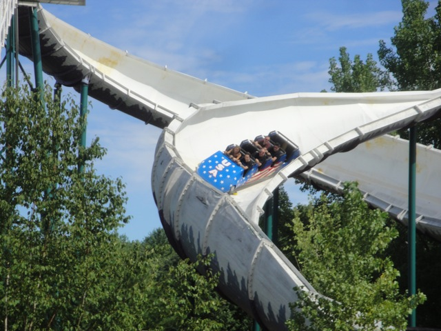
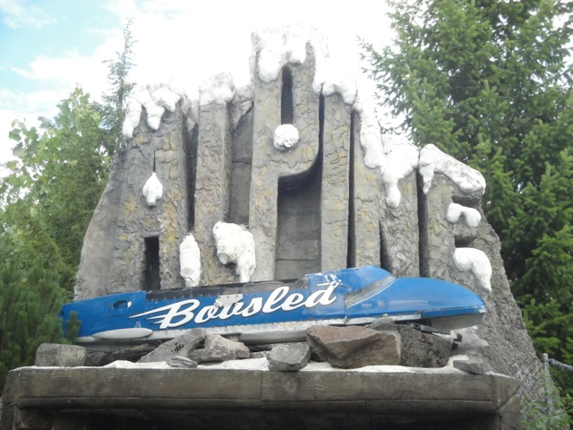
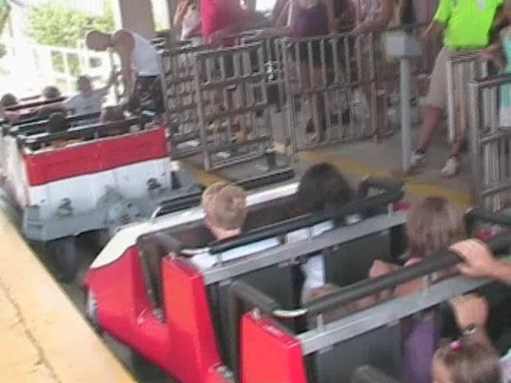

| |

Alpine Bobsled Review

For today's review, we're going back in time to my last visit to Six Flags Great Escape to review Alpine Bobsled. After you squeezed into the ride's cars, you climbed up the lift hill. Now keep in mind that these cars had absolutely no leg room. So tall guys, beware. Once you reached the top, you curved down the first drop. It wasn't much, but it still was pretty fun. After you picked up some speed, we headed straight into a turn. Now on a bobsled, there are no upstop wheels or side wheels, so these cars can moved around on the track. So on the turns, you swung up a little bit. It's almost like a suspended coaster (Both for the swinging aspect as well as the fact that both types of rides are really rare these days. Would love to see more modern coasters utilize swinging action. I honest to god wish THIS would catch on in America. It would be a PERFECT for a small little park). It's pretty cool. We were rolling quite a bit. This was really cool. Unfortunetly, we hit a set of brakes right after that big turn, reducing our speed back to nothing. We then went down another twisty drop. This twisty drop however, was much more exciting than our first drop as we swayed more on this one. We then went through a sort of S turn where we turned right only to then turn left. On bobsleds, this is awesome as it provides a pretty good swaying sensation. However, we then just glided into yet another brake run. And these brake runs hurt your thighs due to the lack of legroom. So that was not a good thing. Then there was another twisty drop. Unfortunetly, this one wasn't nearly as crazy as the other ones. We went through another S Turn, only also not nearly as insane that leads right into, another brake run. At this point, I just wanted to scream "STOP IT WITH THE F*CKING MILLION MID COURSE BRAKES!!!" Then we rolled down a sort of half helix before rolling through a slow turn into the final brake run. While it was an interesting ride, it really felt watered down. I mean, I'm sure without the million mid course brakes, this thing would haul ass. While it sucks to see the ride toned down so much, at least it was a uniqe ride. And now with it gone, La Vibora being the last Intamin Bobsled left really makes it a far more interesting and unique ride. Go ride that while you still can.
6/10
Opened at Six Flags Great Adventure in 1984
Moved to Six Flags Great America in 1989
Moved to Six Flags Great Escape in 1998
Died on September 4, 2023
Built by: Intamin
Last Ridden: August 3, 2011
I have ridden this exact same ride at the following parks.
Six Flags Over Texas
Alpine Bobsled Photos




Home
|